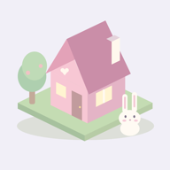
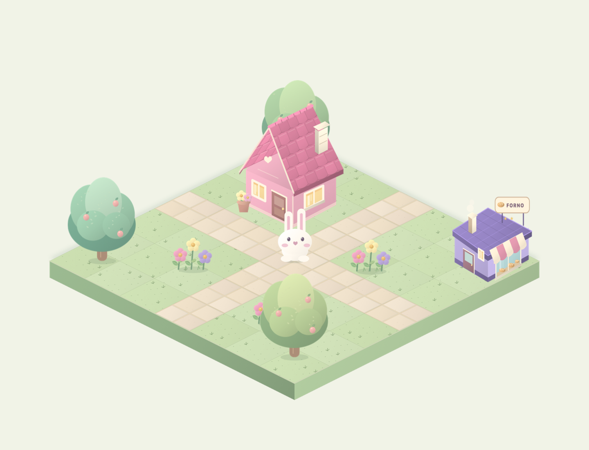
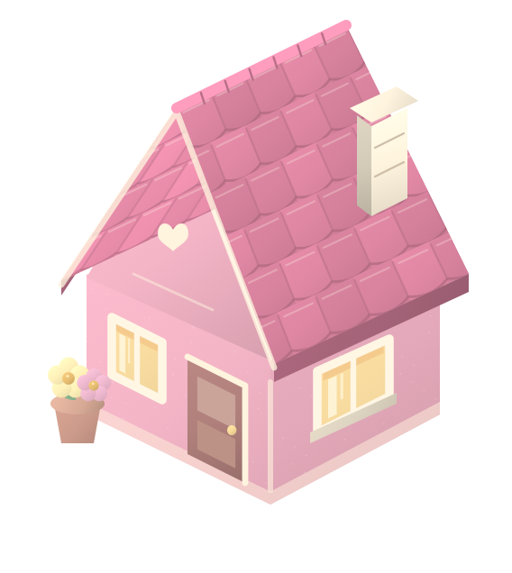
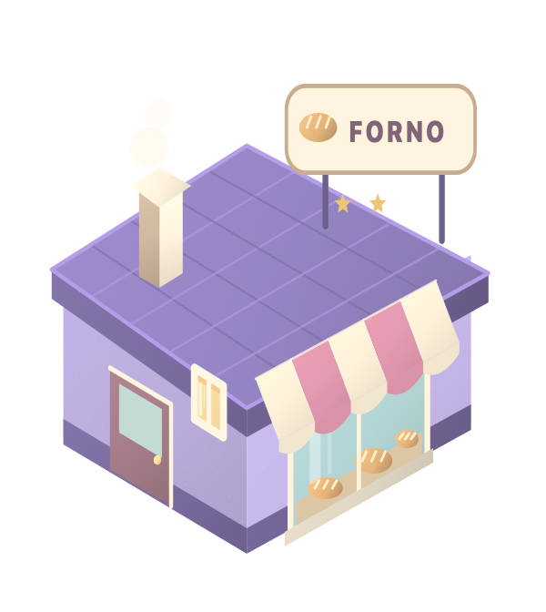
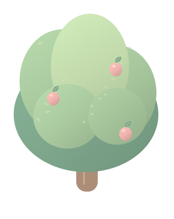
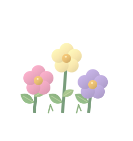
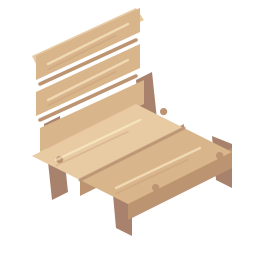
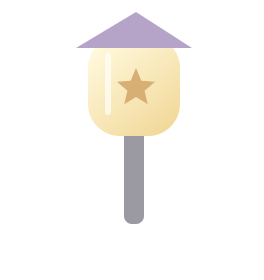

Costruisci e decora
Una casetta da personalizzare, una panetteria da migliorare e decorazioni da sistemare sul prato.

Un progetto Crimi GangUn piccolo villaggio. Tutto il tempo che vuoi. Costruisci, decora e prenditi una pausa in un mondo dai colori gentili.

Grafica originale del progettoSi comincia con una casetta rosa e Mochi, un coniglietto curioso. Poi arriva una panetteria, qualche fiore e la voglia di rendere questo angolo di mondo un po’ più tuo.
Tiny Cozy Town è un gioco da vivere al proprio ritmo: niente fretta, piccoli gesti e un villaggio che cresce insieme alle tue idee.
Una casetta da personalizzare, una panetteria da migliorare e decorazioni da sistemare sul prato.
Un coniglietto e un pulcino che passeggiano per il villaggio, tra una coccola e una piccola sosta.
Pane da ritirare, piante da annaffiare e piccoli incarichi da completare senza scadenza.
Desideri quotidiani senza penalità e un album di traguardi per accompagnare la crescita del villaggio.
Texture originali generate dal progetto: tegole, foglie e personaggi, da guardare da vicino.








La tavola e le texture mostrano la grafica effettiva del progetto; non sono schermate di una release pubblicata.
Lavanda, rosa, crema e verde menta: la palette riprende i colori originali del gioco. Le texture morbide e il disegno isometrico danno al villaggio la sua atmosfera tranquilla.
Stiamo ancora facendo crescere il villaggio. Tiny Cozy Town è in sviluppo e non è ancora disponibile per il download pubblico. Hai un’idea o una curiosità? Scrivici.